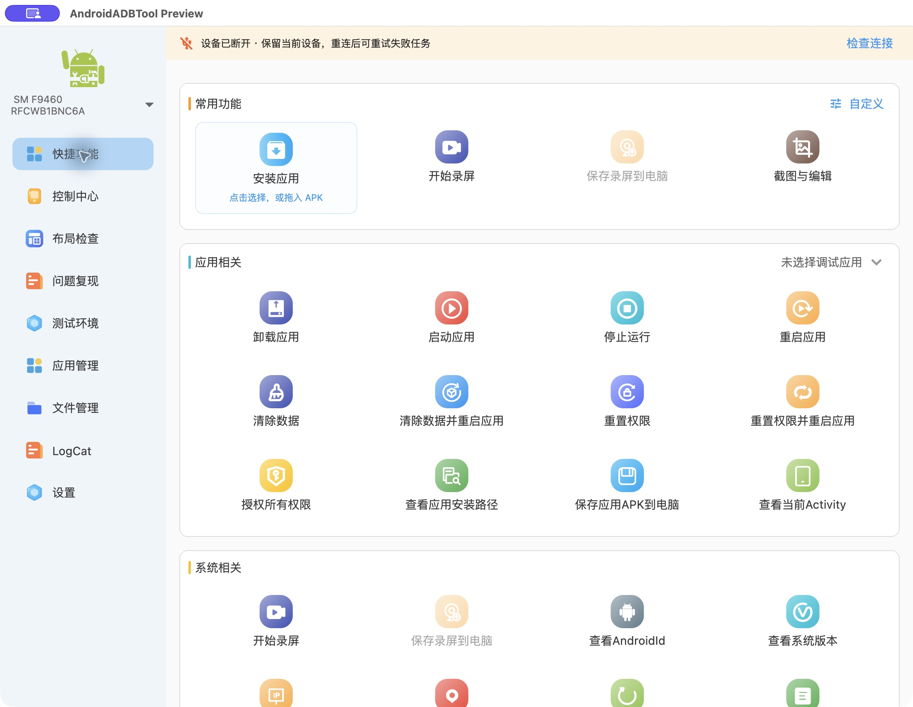
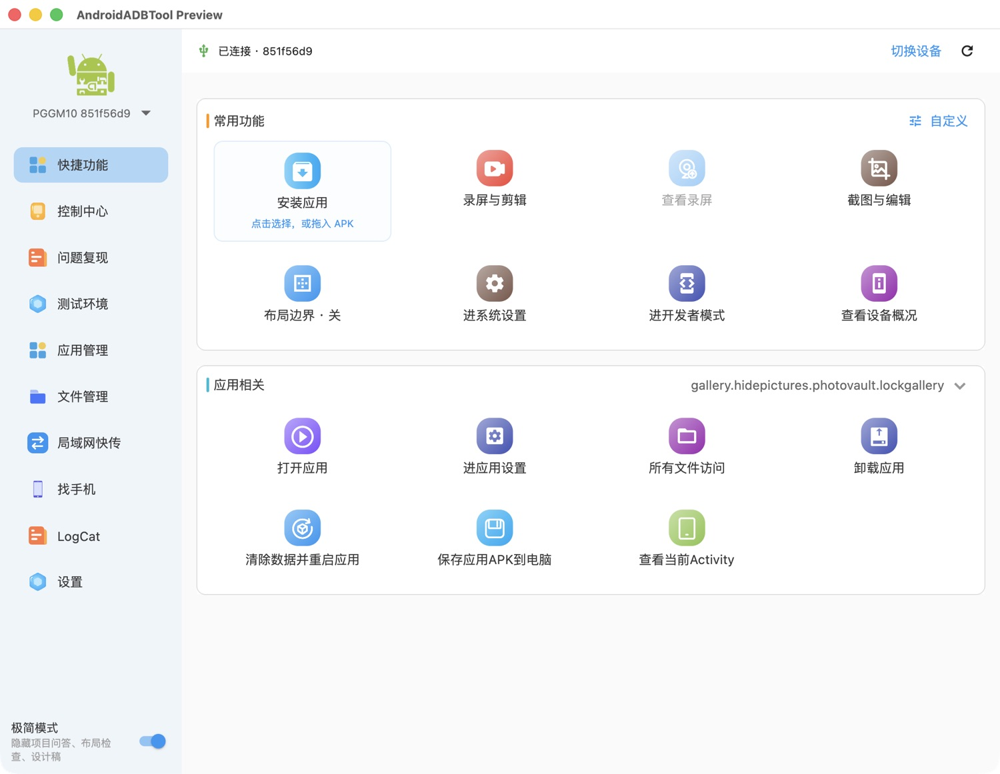
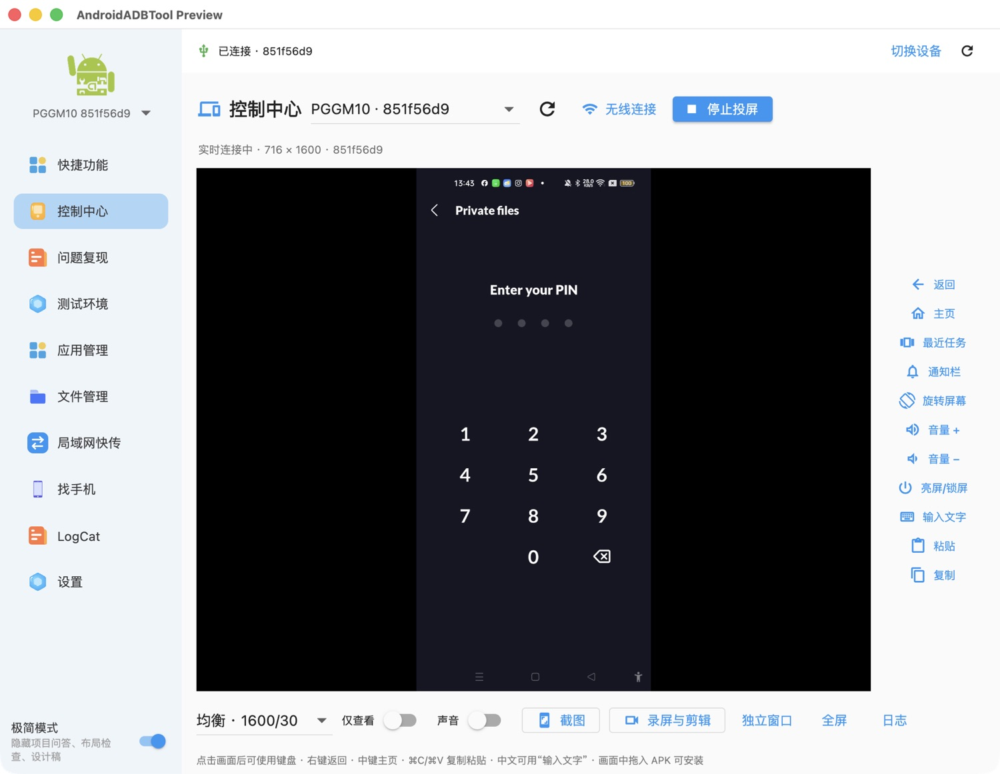
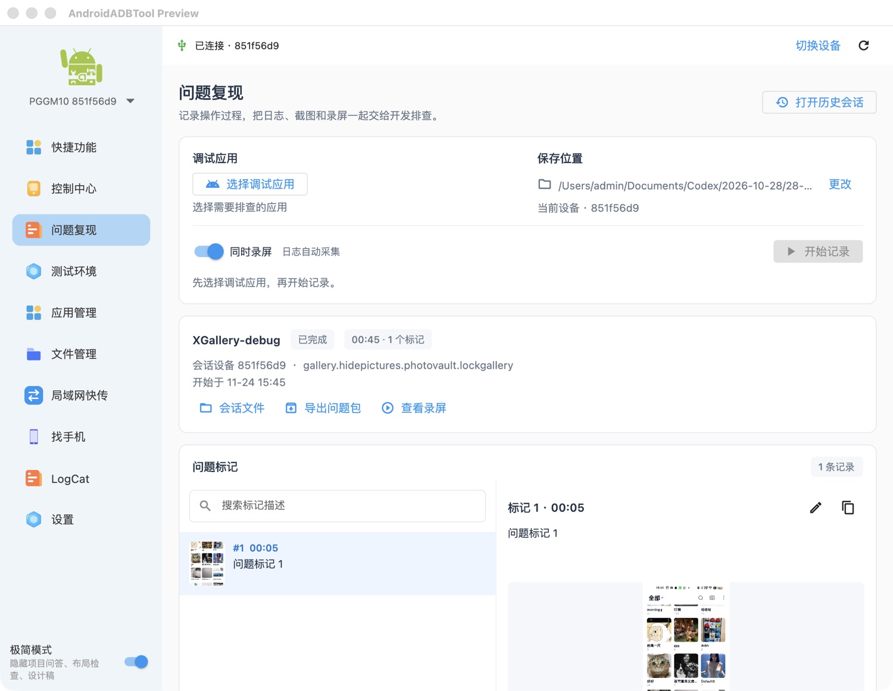
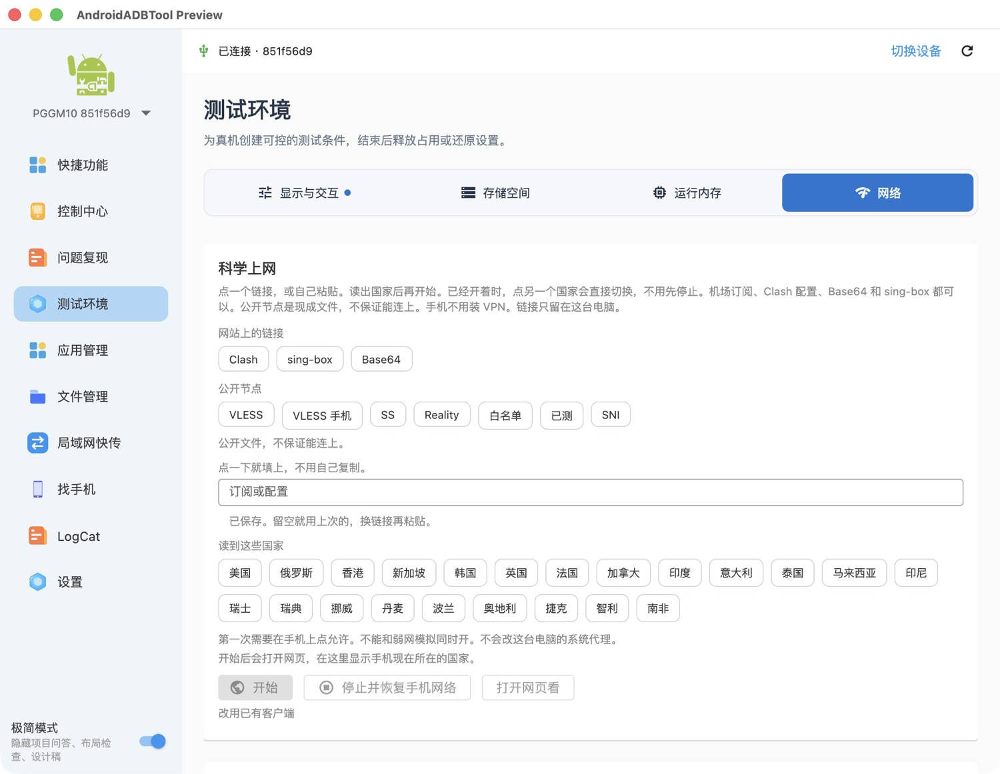
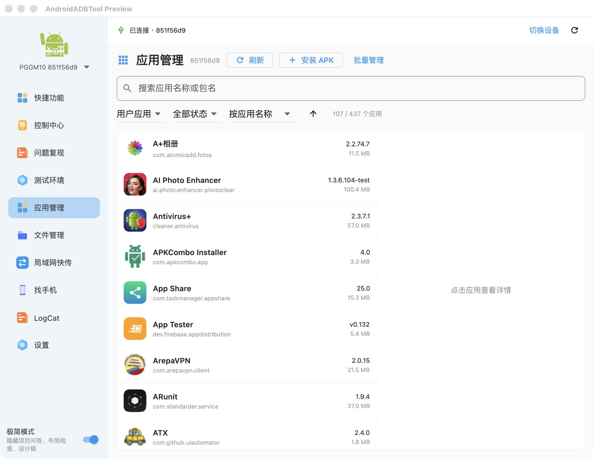
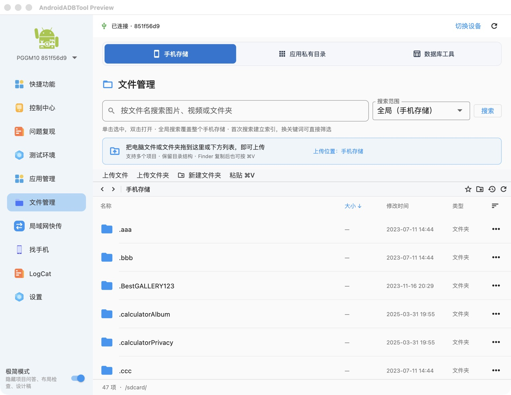
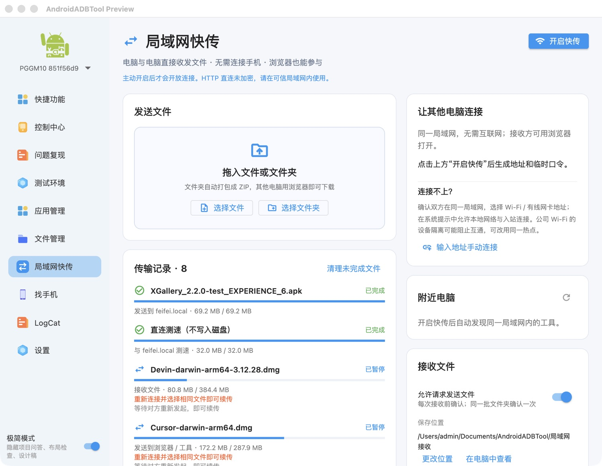
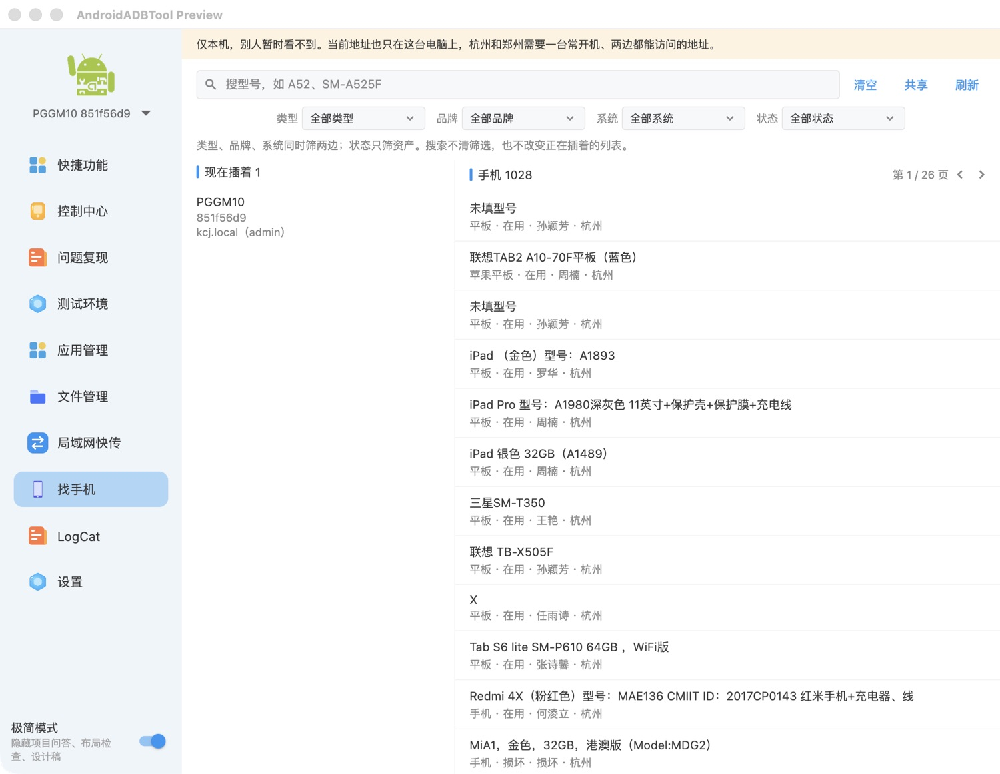
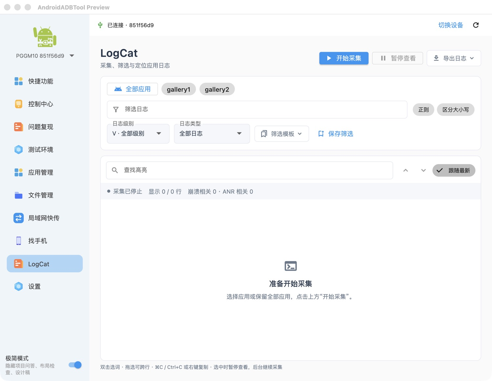

Android 开发与测试工作台
调试少一点折腾，
测试多一分从容。
投屏、文件、日志、录屏与 UI 走查。
常用 Android 调试能力，放在一个桌面工具里。
正在读取最新版本…
Apple 芯片 Mac · macOS 11 或更新版本
正在检查本地安装包…
首次打开被 macOS 拦截？查看“仍要打开”步骤 ↗
● ● ●一个工作台，连接你的 Android

真实应用界面界面持续更新，示意图可能与新版略有差异
无需开发环境安装包内置 ADB 与必要组件按系统提供安装包Mac DMG / Windows 完整 ZIP固定链接，随时查看下载、说明与版本记录集中展示
01下载并安装
02连接 Android 手机
手机开启“开发者选项 → USB 调试”，使用数据线连接电脑。解锁手机，在弹出的 RSA 授权窗口允许这台电脑调试。
首次连接需要在手机上确认授权
03选择设备，直接使用
在应用左侧选择手机。ADB 会自动查找；未识别时，到“设置 → 自动查找”重试。无需另装 Android Studio、Flutter 或 Java。
更新入口：设置 → 应用更新
?安装与使用常见问题展开查看收起说明⌄
- 01
Mac 阻止首次启动
测试包尚未经过 Apple 公证。先从“应用程序”尝试启动一次，再前往 系统设置 → 隐私与安全性 → 安全性 → 仍要打开，按提示确认后点击“打开”。
没有看到按钮？重新尝试启动后再查看。公司设备可能需要管理员允许。
Apple 官方说明 ↗
- 02
找不到手机或显示未授权
解锁手机，开启 USB 调试并确认授权。换用支持数据传输的数据线；部分品牌还需开启“USB 调试（安全设置）”。
- 03
部分功能入口看不见
在侧栏或设置中关闭 极简模式，即可显示项目问答、布局检查、设计稿对比等完整入口。
- 04
部分功能提示权限受限
应用私有目录、布局属性等能力受 Android 版本、应用属性和手机权限限制，按工具中的具体提示处理。
QUICK ACTIONS重复操作，一步到位。
拖入 APK 即可安装，自定义常用功能与排序。截图后直接编辑，录屏后查看、裁剪与合并关键片段。
查看图文使用说明 →
01投屏与录屏
实时查看手机，鼠标键盘操作；录制、变速播放、片段裁剪与合并。
文件与应用管理
搜索、拖拽上传、复制移动、数据库与 XML 查看，快速进入应用设置。
布局与设计稿走查
节点树、边距测量、截图和设计稿对照，导出标注与问题报告。
测试环境
弱网档位、存储与内存压力、屏幕形态、分辨率及字体等测试设置。
项目问答
配置团队问答链接，直接在工具内使用。测试人员无需准备项目源码。
局域网快传与手机台账
电脑间直接传文件；查看手机记录与连接状态，减少协作中的反复确认。
图文以 Mac 版为例。Windows 投屏与录屏使用控制中心的独立窗口，功能范围请查看下载页说明。
01快捷功能连上手机后的常用动作。安装、截图、录屏、打开应用都在这一页。展开步骤收起步骤⌄

- 安装应用。选一个 APK，或拖进「点击选择，或拖入 APK」。应用管理里也有安装。
- 录屏与剪辑。录手机画面，录完可以剪一段再导出。
- 查看录屏。没在录的时候，按钮是这个名字。打开已经录好的画面。
- 截图与编辑。抓当前画面后可标注、识别文字和对比截图。默认线宽为 3px；点「重新截图」直接更新当前画面，成功后替换旧标注，失败则保留已有编辑。复制成功会出现提示。
- 自定义。自己挑哪些按钮放进常用功能。
- 布局边界。查看布局边界。
- 进系统设置。打开手机的系统设置。
- 进开发者模式。打开开发者选项。
- 查看设备概况。看这台手机的概况。
- 打开应用。拉起当前调试包，不用先去应用管理里翻。
- 进应用设置。打开这个包的应用信息。
- 所有文件访问。打开所有文件访问。
- 卸载应用。卸掉当前调试包。
- 清除数据并重启应用。清掉数据再拉起来。
- 保存应用 APK 到电脑。把手机上这个包拉回电脑。
- 查看当前 Activity。看现在前台是哪个界面。
02控制中心实时看手机画面，并在画面上操作。展开步骤收起步骤⌄

- 实时连接中。这一条亮着，才表示画面在播。只是 adb 能看到设备，不等于正在投屏。
- 无线扫码连接。Android 11 及以上手机与电脑接入同一局域网，点「无线连接」，在手机「开发者选项 → 无线调试 → 使用二维码配对设备」中扫码。不要用普通相机或微信扫码；二维码过期可刷新。发现不到时可改用配对码、手动连接。实机扫码兼容性仍在验证中。
- 停止投屏。在「无线连接」那一排。停掉只停画面，手机还连着。
- 返回、主页、最近任务、通知栏。常用导航，在画面右侧。
- 旋转屏幕。旋转不再把正在进行的录屏打断。
- 音量、亮屏/锁屏、声音。调手机音量、亮屏或锁屏、开关投屏声音。
- 输入文字、粘贴、复制。中文用「输入文字」，不要指望直接敲中文进手机。
- 截图。从当前画面抓一张，进编辑。没在投屏时不可用，改走快捷功能。
- 录屏与剪辑。从当前投屏画面开始录。Mac 自动尝试兼容录制，失败后使用电脑画面兜底，保存无声 MOV（最长边 1280 像素、最高 15fps，文件较大）。中途切换会保留前段并另存续录，不会无缝合并。
- 均衡 · 1600/30。画质档，不是右边的「仅查看」。
- 仅查看。不把键鼠操作送进手机。只想看、不想误触时打开。
- 独立窗口、全屏。把投屏拆出去，或铺满。
- 底部提示。点画面后可以用键盘。右键返回，中键主页。把 APK 拖进画面可以安装。
03问题复现记录一次问题。可以同时留画面和日志，再导出问题包。展开步骤收起步骤⌄

- 打开历史会话。回到以前记过的一次。
- 选择调试应用。没选不能开始。选错包，日志会对不上。
- 保存位置。这一次的文件放在哪。可以更改。
- 开始记录。从这一刻记。先把手机摆到复现前的页面再点。
- 同时录屏 · 日志自动采集。勾上后，这一段画面和日志在同一个问题里。
- 问题标记。复现发生的那一下点一下，后面对日志有个时间点。可以搜标记描述。
- 导出问题包。导出的是这一次的包，不是整个日志缓冲。旁边可以查看录屏、打开会话文件。
04测试环境给真机造测试条件。网络里可以科学上网，也可以模拟弱网。展开步骤收起步骤⌄

- 网络。第四个页。科学上网和弱网模拟都在这里。
- 网站上的链接。Clash、Base64、sing-box，或公开节点。公开节点不保证能连上。点一下就填上。
- 国家。从这条链接读出来的，不是固定菜单。图里的国家只是当时那条链接。换一条，国家会变。
- 订阅或配置。已保存的会留着。留空就用上次的，换链接再粘贴。
- 开始。读出国家后再点。第一次需要在手机上点允许。开始后会打开网页，在这里显示手机现在所在的国家。
- 停止并恢复手机网络。测完用这个停。不要只关工具。
- 打开网页看。核对手机现在的出口。这一页打不开，不算已经连上。状态栏图标只表示转发开着。
- 改用已有客户端。电脑上已经连好时用这个，填本地端口。不要把订阅链接填进端口。
05应用管理搜索、安装、管理手机上的应用。展开步骤收起步骤⌄

- 搜索应用名称或包名。装了很多包时用这个，不用翻列表。
- 安装 APK。和快捷功能里的安装是同一件事。
- 刷新、批量管理。重新读列表，或一次处理多台应用。
- 107 / 437 个应用。当前筛出来的数量 / 手机上的总数。只是计数。
- 用户应用、按应用名称、全部状态。缩小列表。图里是按名称排的用户应用。
06文件管理浏览手机文件，上传和下载。展开步骤收起步骤⌄

- 手机存储。当前所在的根。旁边可以切数据库工具、应用私有目录。
- 应用私有目录。进当前应用自己的目录，不用在存储根上翻。
- 搜索。按文件名搜图片、视频或文件夹。全局搜索覆盖整个手机存储。
- 拖到这里。文件或文件夹拖到这块，或拖到下方列表，即可上传。拖到列表里的某一个子文件夹上，仍然不会进那个文件夹。
- 上传位置。图里是「手机存储」。先点进目标目录，再拖。
- 上传文件、上传文件夹、新建文件夹、粘贴。不拖也可以从这里进。
07局域网快传同一局域网里，电脑之间传文件。展开步骤收起步骤⌄

- 开启快传。主动开了才接受连接。文件夹会自动打成 ZIP。传了一半断了，可以续。
- 拖入文件或文件夹。丢进这块就进待传列表。也可以选择文件、选择文件夹。
- 附近电脑。同一局域网里开着快传的机器。公司 Wi-Fi 若开了设备隔离，互通不了，改用同一热点。
- 输入地址手动连接。发现不到时，自己填地址。
- 传输记录。看已经传完的。旁边可以清理未完成文件。
- HTTP 直连未加密。只在可信局域网里用。不要把包丢到公共网络上再开。
08找手机按型号找测试机，并看现在插在哪台电脑。展开步骤收起步骤⌄

- 仅本机提示。共享服务没连上时，仍显示这台电脑上插着的设备，并写明别人暂时看不到。地址在「共享」里配，不放在主流程。
- 搜型号。占位是「搜型号，如 A52、SM-A525F」。营销名和型号代号都能搜。领取人、地点也能搜。资产号不是主路径。搜索不清筛选，也不改变正在插着的列表，并回到第 1 页。
- 类型、品牌、系统、状态。类型、品牌、系统同时筛两边。状态只筛资产。系统可以选范围（8–12、13 及以上、7 及以下、没填版本）或单个大版本。
- 现在插着。按序列号，不是按资产号。这一行是型号、序列号、这台电脑和使用者。心跳大约 1–2 分钟一次；停了大约 3 分钟就不再显示「正在插着」。两台电脑同时报同一个序列号，会用红字写出来，不静默覆盖。
- 资产列表。主行只显示型号。资产号不在标题里。点开详情才有资产号、领取人、状态、地点、系统、备注。
- 分页。默认就有列表，不用先搜。图里是第 1 / 26 页。搜索、筛选、清空都回到第 1 页。
09LogCat看运行日志。展开步骤收起步骤⌄

- 全部应用、gallery1、gallery2。按包过滤。采集中不能切，先停再换。
- 开始采集、暂停查看。选中文字时只是暂停查看，后台继续收。
- 筛选日志。日志类型、日志级别、区分大小写、正则。常用的可以保存筛选，或套筛选模板。
- 查找高亮。在已采到的缓冲里找词，命中会亮出来。旁边可以跟随最新。
- 选词。双击选词，拖选可跨行。⌘C / Ctrl+C 或右键复制。选中时暂停查看，后台继续采集。
10设置检查更新、极简模式和 ADB 路径。展开步骤收起步骤⌄
- 应用更新。优先增量更新，失败再下完整包。安装前先保存编辑，结束正在进行的录屏、导出或文件传输。
- 极简模式。默认开着。侧栏底部写着「隐藏项目问答、布局检查、设计稿」。设置里写全：还会藏起快捷功能里的系统相关、按键相关、屏幕输入和埋点调试。常用功能里的录屏、进系统设置仍保留。
- ADB 路径。可以自动查找，也可以自己选 adb 文件。保存后用于连接和调试。
选择对应系统的安装包，使用 GitHub 官方下载地址。